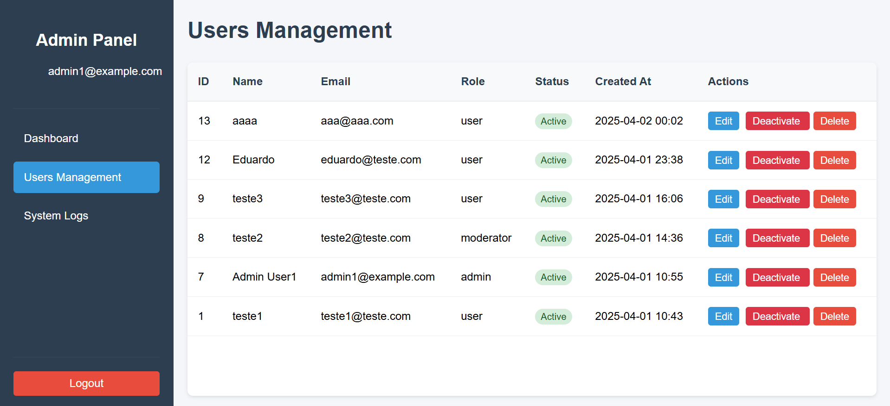
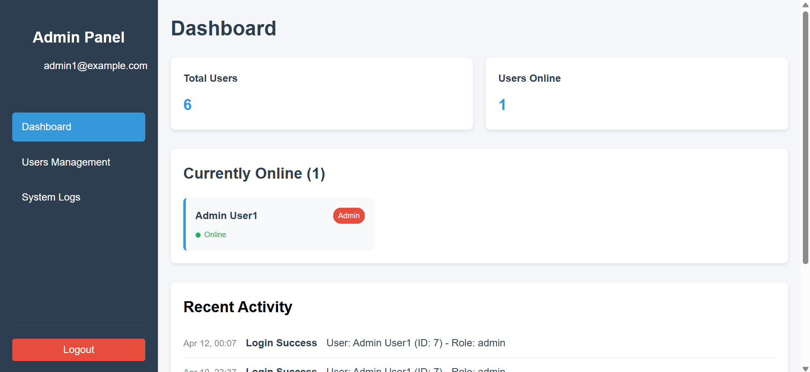
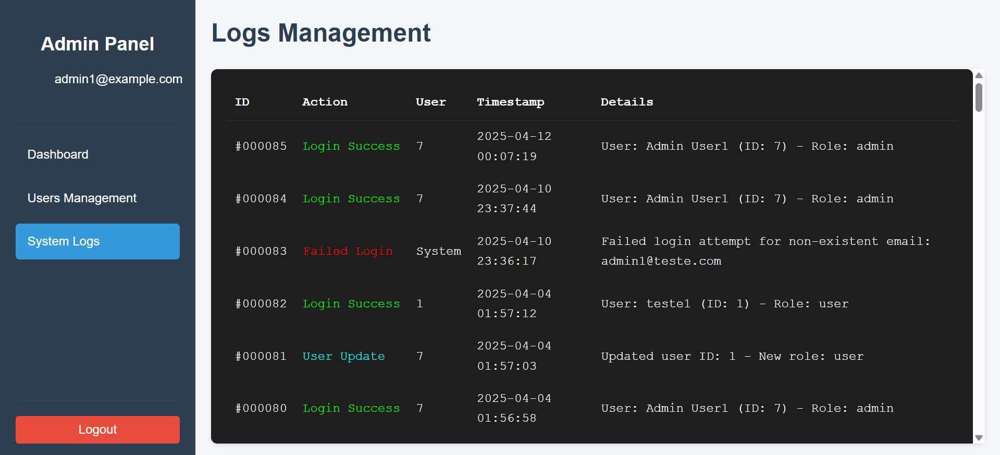

Hello,
I'm Eduardo Costa
Full Stack Web Developer
About me
I am a TEAIG (Técnico Especialista em Aplicações Informáticas de Gestão) student at IEFP, passionate about Web Development. Always eager to learn and stay up to date with the latest technologies, I strive to improve my skills and gain hands-on experience in the field.
I consider myself resourceful, determined, reliable, enthusiastic, and meticulous, always ready to take on new challenges and grow as a professional.
My Projects
MedBayes
The project consists of developing an automated medical screening system aimed at
reducing the initial consultation time in healthcare facilities. The solution allows patients to input symptoms and
physiological data, which are analyzed by the system to suggest a probable diagnosis based on Bayes' Theorem.




MedBayes
The project consists of developing an automated medical screening system aimed at
reducing the initial consultation time in healthcare facilities. The solution allows patients to input symptoms and
physiological data, which are analyzed by the system to suggest a probable diagnosis based on Bayes' Theorem.

MedBayes
The project consists of developing an automated medical screening system aimed at
reducing the initial consultation time in healthcare facilities. The solution allows patients to input symptoms and
physiological data, which are analyzed by the system to suggest a probable diagnosis based on Bayes' Theorem.